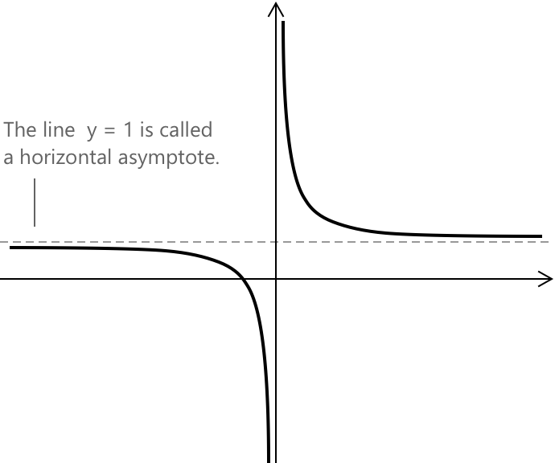
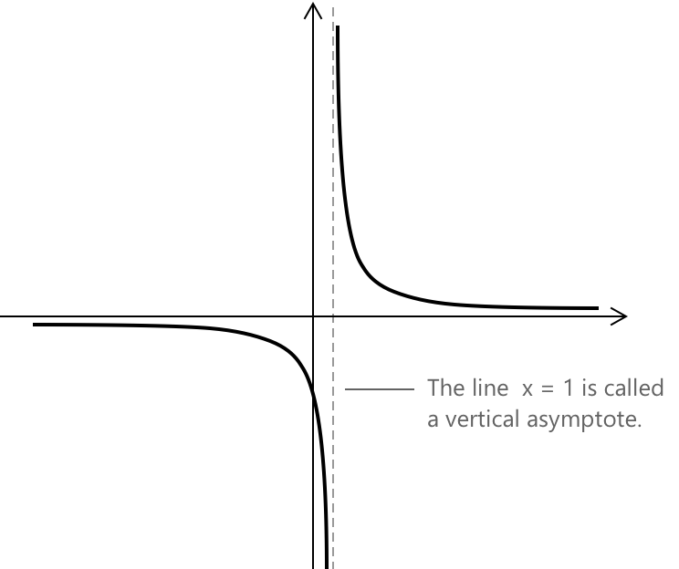
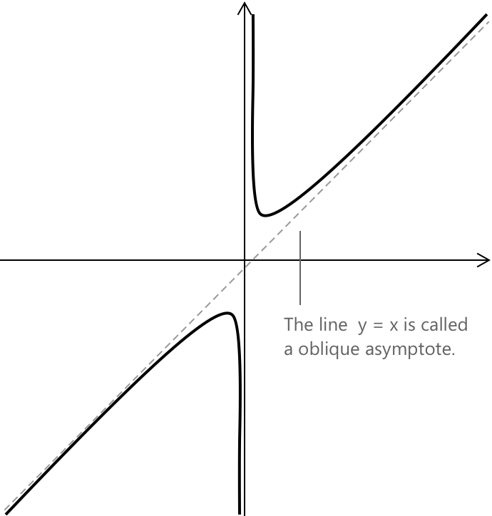

Асимптоти
Горизонтальні асимптоти
Асимптоти є фундаментальним поняттям у математичному аналізі. Це прямі, до яких функція наближається нескінченно, але ніколи не досягає їх, що допомагає охарактеризувати поведінку функції, зокрема поблизу нескінченності або в точках розриву. Асимптоти відіграють фундаментальну роль в аналізі функцій, оскільки їхнє означення за своєю суттю ґрунтується на понятті границь.
Загалом, асимптота описує граничну поведінку функції за допомогою прямої лінії.
Розглянемо дійснозначну функцію \( y = f(x) \), визначену на проміжку \( [a, +\infty[ \), \( ]-\infty, b] \) або на \( \mathbb{R} \). Пряма з рівнянням \( y = L \) називається горизонтальною асимптотою ( f ), якщо:
\[ \lim_{x \to +\infty} f(x) = L \quad \text{або} \quad \lim_{x \to -\infty} f(x) = L \]
Іншими словами, функція наближається до горизонтальної прямої \( y = L \), коли \( x \) прагне до позитивної або негативної нескінченності. Розглянемо, наприклад, функцію:
\[ y = \frac{x + 1}{x} \]

Обчисливши границю при \( x \to \pm\infty \), отримаємо:
\[ \lim_{x \to \pm\infty} \frac{x + 1}{x} = \lim_{x \to \pm\infty} \left(1 + \frac{1}{x}\right) = 1 \]
Отже, функція має горизонтальну асимптоту вздовж прямої \( y = 1 \). Як ми бачимо з графіка функції, обидві гілки наближаються все ближче і ближче до прямої \( y = 1 \), коли \( x \) прагне до позитивної або негативної нескінченності. Така поведінка підтверджує, що \( y = 1 \) є горизонтальною асимптотою.
Вертикальні асимптоти
Нехай \( y = f(x) \) — дійснозначна функція, визначена на проміжку \( [a, b] \setminus {x_0} \), де \( x_0 \in [a, b] \). Ми кажемо, що пряма з рівнянням \( x = x_0 \) є вертикальною асимптотою \( f \), якщо:
\[ \lim_{x \to x_0^-} f(x) = \pm\infty \quad \text{або} \quad \lim_{x \to x_0^+} f(x) = \pm\infty \]
Іншими словами, функція розбігається, коли \( x \) наближається до \( x_0 \) зліва або справа, стаючи довільно великою за модулем. Розглянемо, наприклад, функцію:
\[y = \frac{1}{x - 1}\]

Зауважимо, що раціональна функція не визначена при \( x = 1 \), оскільки знаменник стає рівним нулю. Щоб проаналізувати поведінку \( f(x) \) поблизу \( x = 1 \), обчислимо односторонні границі:
\[ \lim_{x \to 1^-} \frac{1}{x – 1} = -\infty \quad \lim_{x \to 1^+} \frac{1}{x - 1} = +\infty \]
Це означає, що функція розбігається до \( -\infty \) при наближенні до \(1\) зліва і до \( +\infty \) при наближенні справа. Отже, пряма \( x = 1 \) є вертикальною асимптотою функції.
Раціональні функції часто мають вертикальні асимптоти в точках, де знаменник дорівнює нулю і функція не визначена. Ці точки відповідають неусуваним розривам, що є типовим для функцій такого типу.
Похилі асимптоти
Нехай \( y = f(x) \) — дійснозначна функція, визначена на півпрямому \( ] -\infty, a] \) або \( [a, +\infty[ \). Ми кажемо, що пряма з рівнянням \( y = px + q \) є похилою асимптотою \( f \), якщо виконується наступна умова:
\[ \begin{align} \lim_{x \to -\infty} \left[f(x) - (px + q)\right] &= 0 \\[0.5em] \lim_{x \to +\infty} \left[f(x) – (px + q)\right] &= 0 \end{align} \]
Іншими словами, різниця між функцією та прямою \( y = px + q \) прямує до нуля, коли \( x \) прямує до нескінченності або мінус нескінченності. Це означає, що функція поводиться все більше і більше як пряма \( y = px + q \) при великих значеннях \( x \).
Рівняння похилої асимптоти \( y = px + q \) для функції \( f(x) \) можна визначити, обчисливши дві конкретні границі. Кутовий коефіцієнт \( p \) асимптоти знаходиться шляхом обчислення наступної границі:
\[ p = \lim_{x \to \pm\infty} \frac{f(x)}{x} \]
Після того як кутовий коефіцієнт відомий, ми знаходимо вертикальне зміщення \( q \), обчислюючи:
\[ q = \lim_{x \to \pm\infty} \left[f(x) – px\right] \]
Якщо обидві границі існують і є скінченними, то пряма \( y = px + q \) є похилою асимптотою функції.
Розглянемо функцію:
\[ f(x) = \frac{x^2 + 1}{x} \]

Щоб визначити, чи має ця функція похилу асимптоту при \( x \to \pm\infty \), почнемо з аналізу її поведінки при великих значеннях \( x \). Спочатку обчислимо границю:
\[ \frac{f(x)}{x} = \frac{x^2 + 1}{x^2} = 1 + \frac{1}{x^2} \]
Оскільки \( x \to \pm\infty \), доданок \( \dfrac{1}{x^2} \) прямує до нуля, отже:
\[ \lim_{x \to \pm\infty} \frac{f(x)}{x} = 1 \]
Це вказує нам на те, що кутовий коефіцієнт асимптоти дорівнює \( p = 1 \). Далі обчислимо границю різниці між функцією та лінійним членом \( px \), щоб знайти вертикальне зміщення:
\[ f(x) - x = \frac{x^2 + 1}{x} – x = \frac{x^2 + 1 - x^2}{x} = \frac{1}{x} \]
І знову, оскільки \( \frac{1}{x} \to 0 \) при \( x \to \pm\infty \), ми отримаємо:
\[ \lim_{x \to \pm\infty} [f(x) - x] = 0 \]
Отже, функція має похилу асимптоту з рівнянням:
\[ y = x \]
У цьому прикладі похила асимптота проходить через початок координат, в результаті чого \( q = 0 \), що представляє вироджений випадок. Загалом, вертикальне зміщення \( q \) не обов'язково має бути рівним нулю.
Приклад 1
Розглянемо наступну функцію як додатковий приклад, що розширює обговорення за межі виродженого випадку, представленого раніше:
\[ f(x) = \frac{2x^2 – x + 3}{2x} \]
Щоб визначити похилу асимптоту, спочатку обчислимо кутовий коефіцієнт \( p \):
\[ \begin{align} p &= \lim_{x \to \pm\infty} \frac{f(x)}{x} \\[6pt] &= \lim_{x \to \pm\infty} \frac{2x^2 - x + 3}{2x^2} \\[6pt] &= 1 \end{align} \]
Далі обчислимо вертикальне зміщення \( q \):
\[ \begin{align} q &= \lim_{x \to \pm\infty} \bigl(f(x) – x\bigr) \\[6pt] &= \lim_{x \to \pm\infty} \frac{2x^2 – x + 3 – 2x^2}{2x} \\[6pt] &= \lim_{x \to \pm\infty} \frac{-x + 3}{2x} \\[6pt] &= -\frac{1}{2} \end{align} \]
Отже, рівняння похилої асимптоти задається як:
\[ y = x - \frac{1}{2} \]
Підсумок
| Горизонтальна | \[ \lim_{x \to \pm\infty} f(x) = L \] |
| Вертикальна | \[ \lim_{x \to x_0^\pm} f(x) = \pm\infty \] |
| Похила | \[ \lim_{x \to \pm\infty} [f(x) - (px+q)] = 0 \] |
Ключові властивості асимптот
Асимптоти бувають різних видів і підпорядковуються певним правилам, які варто пам'ятати. Деякі з цих властивостей є інтуїтивно зрозумілими, тоді як інші стають очевидними лише після розв'язання кількох прикладів. У наступних пунктах узагальнено найважливіші факти про асимптоти та те, як вони пов'язані з поведінкою функції.
- Не всі функції мають асимптоти.
- Щодо горизонтальних асимптот можливі кілька конфігурацій: функція може не мати їх, вона може наближатися до однієї і тієї ж горизонтальної прямої при \( x \to +\infty \) та \( x \to -\infty \), або вона може наближатися до двох різних горизонтальних прямих у двох різних напрямках.
- Різні типи асимптот також можуть зустрічатися разом. Функція може одночасно мати горизонтальні, вертикальні та похилі асимптоти, залежно від її поведінки біля точок розриву та при прагненні змінної до нескінченності.
- Вертикальні асимптоти зазвичай виникають у точках, де функція не визначена внаслідок ділення на нуль. Ці асимптоти відповідають неусуваним розривам.
- Горизонтальні асимптоти характеризують поведінку функції на нескінченності, коли вона наближається до сталої величини при дуже великих або дуже малих значеннях \( x \).
- Похилі асимптоти виникають, коли ступінь чисельника перевищує ступінь знаменника рівно на одиницю, через що функція наближається до похилої прямої при прагненні \( x \) до нескінченності.